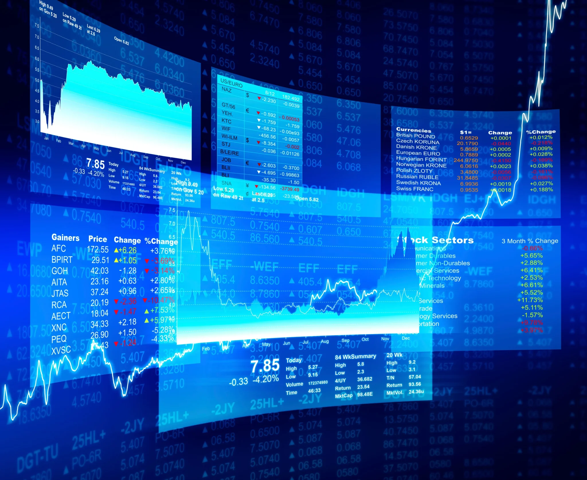
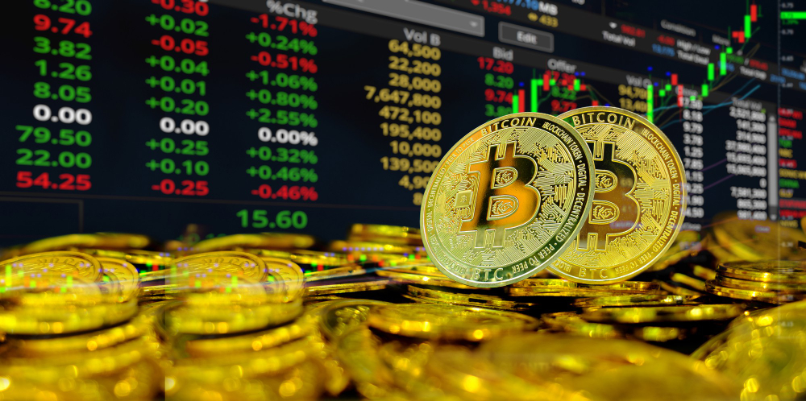

Mercados Financieros
Mercados de Valores
Los mercados de valores son plataformas donde se compran y venden acciones de empresas públicas. Las bolsas de valores más importantes incluyen:
- NYSE (Nueva York)
- NASDAQ (Tecnología)
- LSE (Londres)
- Tokio Stock Exchange

Forex (Mercado de Divisas)
El mercado Forex es el mercado financiero más grande del mundo, donde se negocian pares de divisas. Características principales:
- Opera 24 horas al día, 5 días a la semana
- Alta liquidez
- Pares principales: EUR/USD, GBP/USD, USD/JPY, etc.
- Apalancamiento disponible

Criptomonedas
Las criptomonedas son activos digitales descentralizados que utilizan criptografía para seguridad. Aspectos clave:
- Operan 24/7
- Alta volatilidad
- Principales criptos: Bitcoin (BTC), Ethereum (ETH), Binance Coin (BNB), etc.
- Blockchain como tecnología subyacente
